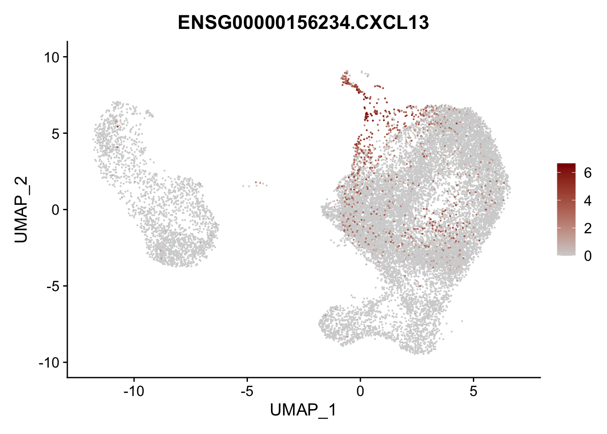
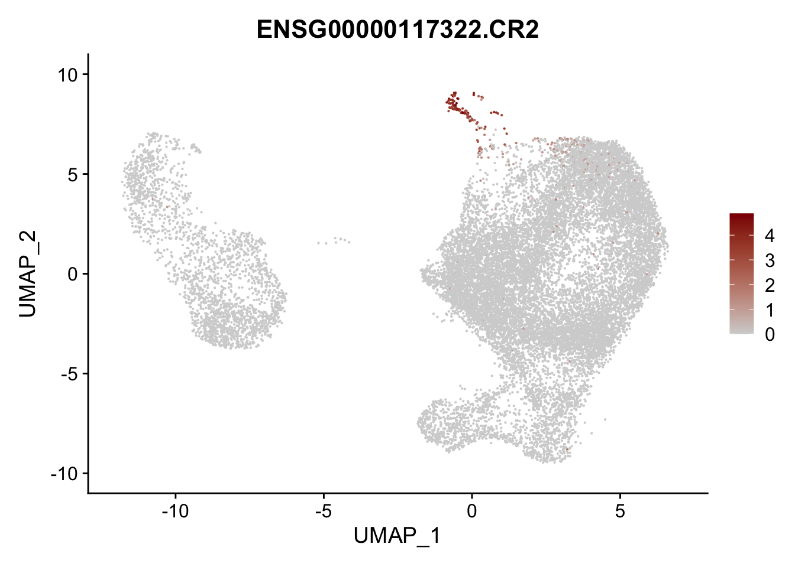
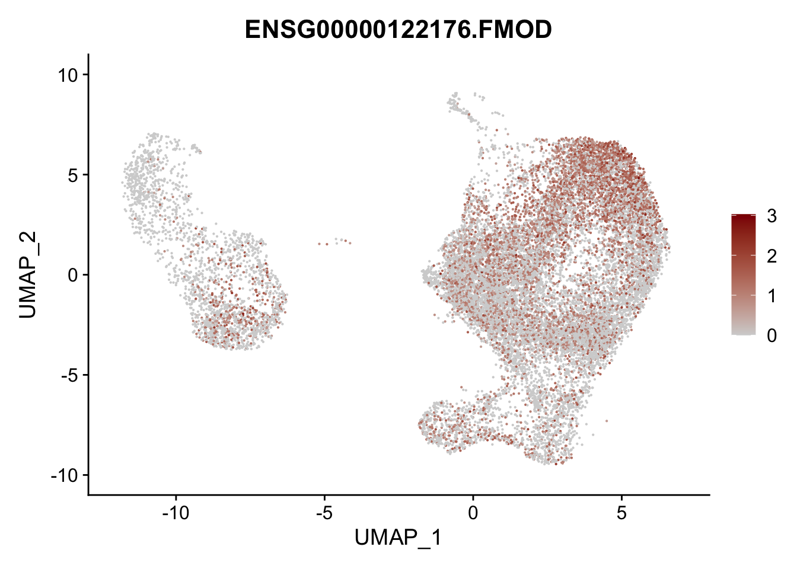
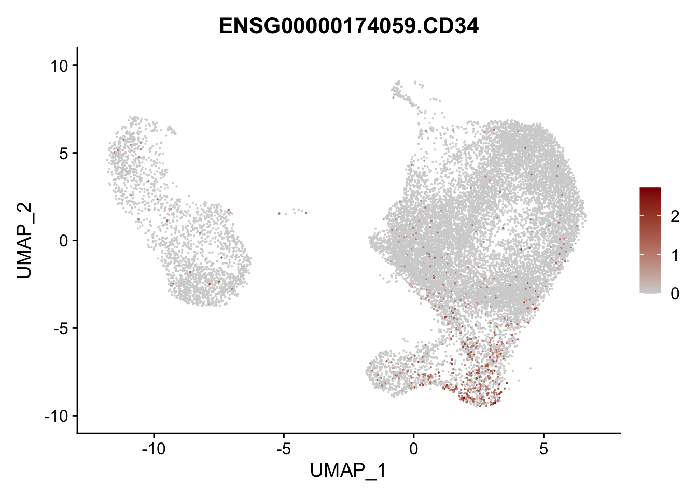
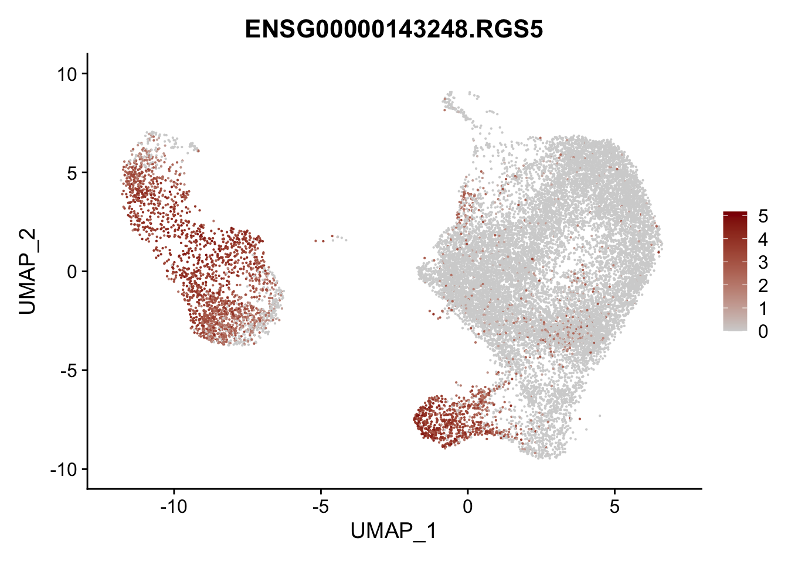
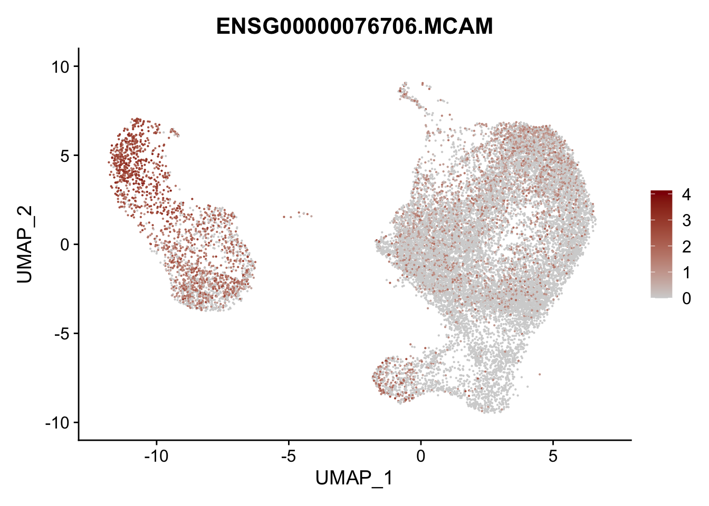

visualize marker genes FRCs - resting LN only
Load packages
## load packages
suppressPackageStartupMessages({
library(dplyr)
library(reshape2)
library(ggplot2)
library(cowplot)
library(purrr)
library(Seurat)
library(tidyverse)
library(ggpubr)
library(runSeurat3)
library(here)
library(ggsci)
library(pheatmap)
library(scater)
library(clusterProfiler)
library(org.Hs.eg.db)
library(DOSE)
library(enrichplot)
})load seurat object
basedir <- here()
seurat <- readRDS(file= paste0(basedir,
"/data/AllPatWithoutCM_FRConly_intOrig_seurat.rds"))
DefaultAssay(object = seurat) <- "RNA"
## set col palettes
colPal <- c(pal_uchicago()(6), "#6692a3", "#3b7f60")
names(colPal) <- c("0", "1", "2", "3", "4", "5", "6", "7")
colPat <- c(pal_nejm()(7),pal_futurama()(12))[1:length(unique(seurat$patient))]
names(colPat) <- unique(seurat$patient)
colCond2 <- c("#6692a3","#971c1c","#d17d67")
names(colCond2) <- unique(seurat$cond)
colGrp <- pal_uchicago()(length(unique(seurat$grp)))
names(colGrp) <- unique(seurat$grp)
colOri <- pal_npg()(length(unique(seurat$origin)))
names(colOri) <- unique(seurat$origin)
## all activated in one grp
seurat$cond2 <- seurat$cond
seurat$cond[which(seurat$cond %in% c("chronic", "acute"))] <- "activated"
colCond <- c("#6692a3","#971c1c")
names(colCond) <- c("resting", "activated")subset only resting
seurat <- subset(seurat, cond=="resting")visualize data
clustering
## visualize input data
DimPlot(seurat, reduction = "umap", cols=colPal)+
theme_bw() +
theme(axis.text = element_blank(), axis.ticks = element_blank(),
panel.grid.minor = element_blank()) +
xlab("UMAP1") +
ylab("UMAP2")
DimPlot(seurat, reduction = "umap", cols=colPal, pt.size=1)+
theme_void()
patient
## visualize input data
DimPlot(seurat, reduction = "umap", cols=colPat, group.by = "patient")+
theme_bw() +
theme(axis.text = element_blank(), axis.ticks = element_blank(),
panel.grid.minor = element_blank()) +
xlab("UMAP1") +
ylab("UMAP2")
DimPlot(seurat, reduction = "umap", cols=colPat, group.by = "patient",
pt.size=0.5, shuffle = T)+
theme_void()
cond
## visualize input data
DimPlot(seurat, reduction = "umap", cols=colCond, group.by = "cond")+
theme_bw() +
theme(axis.text = element_blank(), axis.ticks = element_blank(),
panel.grid.minor = element_blank()) +
xlab("UMAP1") +
ylab("UMAP2")
DimPlot(seurat, reduction = "umap", cols=colCond, group.by = "cond",
pt.size=0.5, shuffle = T)+
theme_void()
grp
## visualize input data
DimPlot(seurat, reduction = "umap", cols=colGrp, group.by = "grp")+
theme_bw() +
theme(axis.text = element_blank(), axis.ticks = element_blank(),
panel.grid.minor = element_blank()) +
xlab("UMAP1") +
ylab("UMAP2")
origin
## visualize input data
DimPlot(seurat, reduction = "umap", cols=colOri, group.by = "origin")+
theme_bw() +
theme(axis.text = element_blank(), axis.ticks = element_blank(),
panel.grid.minor = element_blank()) +
xlab("UMAP1") +
ylab("UMAP2")
vis selected stroma marker
Idents(seurat) <- seurat$intCluster
cluster <- levels(seurat)
genes <- data.frame(gene=rownames(seurat)) %>%
mutate(geneID=gsub("^.*\\.", "", gene))
selGenesAll <- read_tsv(file = paste0(basedir,
"/data/overallFRCMarker.txt")) %>%
left_join(., genes, by = "geneID") %>%
filter(!gene == "ENSG00000232995.RGS5")
seurat$intCluster <- factor(seurat$intCluster, levels = c("7", "2","0","1",
"5", "6", "3", "4"))
Idents(seurat) <- seurat$intCluster
pOut <- avgHeatmap(seurat = seurat, selGenes = selGenesAll,
colVecIdent = colPal,
ordVec=levels(seurat),
gapVecR=NULL, gapVecC=NULL,cc=F,
cr=F, condCol=F)
Dotplot
DotPlot(seurat, assay="RNA", features = rev(selGenesAll$gene), scale =T,
cluster.idents = F) +
scale_color_viridis_c() +
coord_flip() +
theme(axis.text.x = element_text(angle = 90, hjust = 1)) +
scale_x_discrete(breaks=rev(selGenesAll$gene), labels=rev(selGenesAll$geneID)) +
xlab("") + ylab("")DotPlot(seurat, assay="RNA", features = rev(selGenesAll$gene), scale =F,
cluster.idents = F) +
scale_color_viridis_c() +
coord_flip() +
theme(axis.text.x = element_text(angle = 90, hjust = 1)) +
scale_x_discrete(breaks=rev(selGenesAll$gene), labels=rev(selGenesAll$geneID)) +
xlab("") + ylab("")Featureplot
pList <- sapply(selGenesAll$gene, function(x){
p <- FeaturePlot(seurat, reduction = "umap",
features = x,
cols=c("lightgrey", "darkred"),
order = F)+
theme(legend.position="right")
plot(p)
})





project signatures
genesDat <- data.frame(EnsID=rownames(seurat)) %>%
mutate(gene=gsub(".*\\.", "", EnsID))
selGenes <- data.frame(gene=c("ACTA2", "TAGLN", "MYH11", "TPM1", "MCAM", "RGS5")) %>%
left_join(., genesDat, by="gene")
seurat <- AddModuleScore(
object = seurat,
features = list(c(selGenes$EnsID)),
ctrl = 5,
name = 'VSMCsign'
)
cut <- 0.8*max(seurat$VSMCsign1)
selSign <- "VSMCsign1"
p <- FeaturePlot(seurat, reduction = "umap", pt.size = 1, max.cutoff = cut,
features = selSign,
cols=c("#00155e", "#4575B4", "#FFFFBF" ,"#f6aa3e",
"#d64141","#8c0128"),
order = F)+
theme(legend.position="right")
plot(p)
p <- FeaturePlot(seurat, reduction = "umap", pt.size = 1, max.cutoff = cut,
features = selSign,
cols=rev(c("#D73027", "#FC8D59","#FEE090", "#E0F3F8", "#91BFDB", "#4575B4")),
order = F)+
theme(legend.position="right")
plot(p)
p <- FeaturePlot(seurat, reduction = "umap", pt.size = 1, max.cutoff = cut,
features = selSign,
cols=c( '#d7eae7', '#74a6b3' ,'#5b8ea9', '#2c5c9e', '#00429d', "#00155e"),
order = F)+
theme(legend.position="right")
plot(p)
p <- FeaturePlot(seurat, reduction = "umap", pt.size = 1, max.cutoff = cut,
features = selSign,
cols=c('#dadada', '#c3b0b1' ,'#9c676b', '#93003a', '#6c1835'),
order = F)+
theme(legend.position="right")
plot(p)
Idents(seurat) <- seurat$intCluster
selGenesForm <- selGenes %>% mutate(geneID=gene) %>%
dplyr::select(geneID, EnsID) %>% mutate(gene=EnsID)
pOut <- avgHeatmap(seurat = seurat, selGenes = selGenesForm,
colVecIdent = colPal,
ordVec=levels(seurat),
gapVecR=NULL, gapVecC=NULL,cc=F,
cr=F, condCol=F)
selGenes <- data.frame(gene=c("CCL19", "CCL21", "CXCL13", "LUM", "THY1",
"PDGFRA", "PDGFRB", "COL1A1", "COL1A2", "COL3A1")) %>%
left_join(., genesDat, by="gene")
seurat <- AddModuleScore(
object = seurat,
features = list(c(selGenes$EnsID)),
ctrl = 5,
name = 'FRCsign'
)
cut <- 0.8*max(seurat$FRCsign1)
selSign <- "FRCsign1"
p <- FeaturePlot(seurat, reduction = "umap", pt.size = 1, max.cutoff = cut,
features = selSign,
cols=c("#00155e", "#4575B4", "#FFFFBF" ,"#f6aa3e",
"#d64141","#8c0128"),
order = F)+
theme(legend.position="right")
plot(p)
p <- FeaturePlot(seurat, reduction = "umap", pt.size = 1, max.cutoff = cut,
features = selSign,
cols=rev(c("#D73027", "#FC8D59","#FEE090", "#E0F3F8", "#91BFDB", "#4575B4")),
order = F)+
theme(legend.position="right")
plot(p)
p <- FeaturePlot(seurat, reduction = "umap", pt.size = 1, max.cutoff = cut,
features = selSign,
cols=c( '#d7eae7', '#74a6b3' ,'#5b8ea9', '#2c5c9e', '#00429d', "#00155e"),
order = F)+
theme(legend.position="right")
plot(p)
p <- FeaturePlot(seurat, reduction = "umap", pt.size = 1, max.cutoff = cut,
features = selSign,
cols=c('#dadada', '#c3b0b1' ,'#9c676b', '#93003a', '#6c1835'),
order = F)+
theme(legend.position="right")
plot(p)
selGenesForm <- selGenes %>% mutate(geneID=gene) %>%
dplyr::select(geneID, EnsID) %>% mutate(gene=EnsID)
pOut <- avgHeatmap(seurat = seurat, selGenes = selGenesForm,
colVecIdent = colPal,
ordVec=levels(seurat),
gapVecR=NULL, gapVecC=NULL,cc=F,
cr=F, condCol=F)
selGenes <- data.frame(gene=c("CCL19", "CCL21", "CXCL13", "LUM", "PDGFRA",
"PGFRB")) %>%
left_join(., genesDat, by="gene")
Idents(seurat) <- seurat$grp
seurat <- AddModuleScore(
object = seurat,
features = list(c(selGenes$EnsID)),
ctrl = 5,
name = 'FRC2sign'
)
cut <- 0.8*max(seurat$FRC2sign1)
selSign <- "FRC2sign1"
p <- FeaturePlot(seurat, reduction = "umap", pt.size = 1, max.cutoff = cut,
features = selSign,
cols=c("#00155e", "#4575B4","#E0F3F8", "#FFFFBF" ,"#f6aa3e","#d64141"),
order = F)+
theme(legend.position="right")
plot(p)
p <- FeaturePlot(seurat, reduction = "umap", pt.size = 1, max.cutoff = cut,
features = selSign,
cols=rev(c("#D73027", "#FC8D59","#FEE090", "#E0F3F8", "#91BFDB", "#4575B4")),
order = F)+
theme(legend.position="right")
plot(p)
p <- FeaturePlot(seurat, reduction = "umap", pt.size = 1, max.cutoff = cut,
features = selSign,
cols=c( '#d7eae7', '#74a6b3' ,'#5b8ea9', '#2c5c9e', '#00429d', "#00155e"),
order = F)+
theme(legend.position="right")
plot(p)
p <- FeaturePlot(seurat, reduction = "umap", pt.size = 1, max.cutoff = cut,
features = selSign,
cols=c('#dadada', '#c3b0b1' ,'#9c676b', '#93003a', '#6c1835'),
order = F)+
theme(legend.position="right")
plot(p)
gene signature perivasular niche
periCluster <- c("3", "4", "5", "6")
others <- c("0", "1", "2", "7")
seurat$peri <- "peri"
seurat$peri[which(seurat$intCluster %in% others)] <- "other"
Idents(seurat) <- seurat$peri
clustDE <- lapply(periCluster, function(cl){
seuratSub <- subset(seurat, intCluster %in% c(cl, others))
DEgenes <-FindAllMarkers(seuratSub, only.pos=T, logfc.threshold = 0.1,
min.pct = 0.01)
if(nrow(DEgenes)>1){
DEgenes <- DEgenes %>% filter(p_val_adj<0.01) %>%
mutate(group=paste0(cl, "_", cluster)) %>%
mutate(geneID=gsub(".*\\.", "", gene))
}
})
names(clustDE) <- periCluster
clustDE_Dat <- data.frame(do.call("rbind", clustDE))
intersectMarker <- clustDE_Dat %>% group_by(cluster, gene) %>%
summarize(cnt=n())
selGenes <- data.frame(gene=c("ANXA1","ASPN", "CD9", "ANGPT1", "EBF1", "EBF2",
"A2M","SPARCL1", "CAV1", "CAV2", "ENPEP")) %>%
left_join(., genesDat, by="gene")
seurat <- AddModuleScore(
object = seurat,
features = list(c(selGenes$EnsID)),
ctrl = 5,
name = 'PRCsign'
)
cut <- 0.8*max(seurat$PRCsign1)
selSign <- "PRCsign1"
p <- FeaturePlot(seurat, reduction = "umap", pt.size = 1, max.cutoff = cut,
features = selSign,
cols=c("#00155e", "#4575B4","#E0F3F8", "#FFFFBF" ,"#f6aa3e","#d64141"),
order = F)+
theme(legend.position="right")
plot(p)
p <- FeaturePlot(seurat, reduction = "umap", pt.size = 1, max.cutoff = cut,
features = selSign,
cols=rev(c("#D73027", "#FC8D59","#FEE090", "#E0F3F8", "#91BFDB", "#4575B4")),
order = F)+
theme(legend.position="right")
plot(p)
p <- FeaturePlot(seurat, reduction = "umap", pt.size = 1, max.cutoff = cut,
features = selSign,
cols=c( '#d7eae7', '#74a6b3' ,'#5b8ea9', '#2c5c9e', '#00429d', "#00155e"),
order = F)+
theme(legend.position="right")
plot(p)
p <- FeaturePlot(seurat, reduction = "umap", pt.size = 1, max.cutoff = cut,
features = selSign,
cols=c('#dadada', '#c3b0b1' ,'#9c676b', '#93003a', '#6c1835'),
order = F)+
theme(legend.position="right")
plot(p)
dotplot perivascular gene signature
Idents(seurat) <- seurat$intCluster
DotPlot(seurat, assay="RNA", features = rev(selGenes$EnsID), scale =T,
cluster.idents = F) +
scale_color_viridis_c() +
coord_flip() +
theme(axis.text.x = element_text(angle = 90, hjust = 1)) +
scale_x_discrete(breaks=rev(selGenes$EnsID), labels=rev(selGenes$gene)) +
xlab("") + ylab("")
DotPlot(seurat, assay="RNA", features = rev(selGenes$EnsID), scale =F,
cluster.idents = F) +
scale_color_viridis_c() +
coord_flip() +
theme(axis.text.x = element_text(angle = 90, hjust = 1)) +
scale_x_discrete(breaks=rev(selGenes$EnsID), labels=rev(selGenes$gene)) +
xlab("") + ylab("")
heatmap
selGenesForm <- selGenes %>% mutate(geneID=gene) %>%
dplyr::select(geneID, EnsID) %>% mutate(gene=EnsID)
pOut <- avgHeatmap(seurat = seurat, selGenes = selGenesForm,
colVecIdent = colPal,
ordVec=levels(seurat),
gapVecR=NULL, gapVecC=NULL,cc=F,
cr=F, condCol=F)GO term enrichment
colPeri <- c("#394e9a", "#aeafb1")
names(colPeri) <- c("peri", "others")
selGenesGO <- intersectMarker %>% dplyr::filter(cluster=="peri" & cnt==4) %>%
mutate(EnsID = gsub("\\..*$", "", gene))
egoA <- enrichGO(gene = unique(selGenesGO$EnsID),
OrgDb = org.Hs.eg.db,
keyType = 'ENSEMBL',
ont = "BP",
pAdjustMethod = "BH",
pvalueCutoff = 0.05,
qvalueCutoff = 0.05)
egoA <- setReadable(egoA, OrgDb = org.Hs.eg.db)
egoADat <- egoA@result
selGO <- c("GO:0006936", "GO:0031032", "GO:0031589",
"GO:1903522", "GO:0097746", "GO:0071711", "GO:1901888", "GO:0050878")
selGODat <- egoADat %>% filter(ID %in% selGO) %>% mutate(cluster="peri")
selGODat <- selGODat %>% mutate(qscore=-log(p.adjust, base=10))
p <- ggbarplot(selGODat, x = "Description", y = "qscore",
fill = "cluster",
color = "cluster",
palette = colPeri,
sort.val = "asc",
sort.by.groups = TRUE
#x.text.angle = 90
) +
rotate()
p
session info
sessionInfo()R version 4.3.0 (2023-04-21)
Platform: x86_64-apple-darwin20 (64-bit)
Running under: macOS Ventura 13.4.1
Matrix products: default
BLAS: /Library/Frameworks/R.framework/Versions/4.3-x86_64/Resources/lib/libRblas.0.dylib
LAPACK: /Library/Frameworks/R.framework/Versions/4.3-x86_64/Resources/lib/libRlapack.dylib; LAPACK version 3.11.0
locale:
[1] en_US.UTF-8/en_US.UTF-8/en_US.UTF-8/C/en_US.UTF-8/en_US.UTF-8
time zone: Europe/Berlin
tzcode source: internal
attached base packages:
[1] stats4 stats graphics grDevices utils datasets methods base
other attached packages:
[1] enrichplot_1.20.3 DOSE_3.26.2 org.Hs.eg.db_3.17.0
[4] AnnotationDbi_1.62.2 clusterProfiler_4.8.3 scater_1.28.0
[7] scuttle_1.10.3 SingleCellExperiment_1.22.0 SummarizedExperiment_1.30.2
[10] Biobase_2.60.0 GenomicRanges_1.52.1 GenomeInfoDb_1.36.4
[13] IRanges_2.36.0 S4Vectors_0.40.1 BiocGenerics_0.48.0
[16] MatrixGenerics_1.12.3 matrixStats_1.2.0 pheatmap_1.0.12
[19] ggsci_3.0.1 here_1.0.1 runSeurat3_0.1.0
[22] ggpubr_0.6.0 lubridate_1.9.3 forcats_1.0.0
[25] stringr_1.5.1 readr_2.1.5 tidyr_1.3.1
[28] tibble_3.2.1 tidyverse_2.0.0 Seurat_5.0.2
[31] SeuratObject_5.0.1 sp_2.1-3 purrr_1.0.2
[34] cowplot_1.1.3 ggplot2_3.5.0 reshape2_1.4.4
[37] dplyr_1.1.4
loaded via a namespace (and not attached):
[1] fs_1.6.3 spatstat.sparse_3.0-3 bitops_1.0-7
[4] HDO.db_0.99.1 httr_1.4.7 RColorBrewer_1.1-3
[7] tools_4.3.0 sctransform_0.4.1 backports_1.4.1
[10] utf8_1.2.4 R6_2.5.1 lazyeval_0.2.2
[13] uwot_0.1.16 withr_3.0.0 gridExtra_2.3
[16] progressr_0.14.0 cli_3.6.2 spatstat.explore_3.2-6
[19] fastDummies_1.7.3 scatterpie_0.2.1 labeling_0.4.3
[22] spatstat.data_3.0-4 ggridges_0.5.6 pbapply_1.7-2
[25] yulab.utils_0.1.4 gson_0.1.0 parallelly_1.37.1
[28] limma_3.56.2 rstudioapi_0.15.0 RSQLite_2.3.5
[31] gridGraphics_0.5-1 generics_0.1.3 vroom_1.6.5
[34] ica_1.0-3 spatstat.random_3.2-3 car_3.1-2
[37] GO.db_3.17.0 Matrix_1.6-5 ggbeeswarm_0.7.2
[40] fansi_1.0.6 abind_1.4-5 lifecycle_1.0.4
[43] yaml_2.3.8 carData_3.0-5 qvalue_2.32.0
[46] Rtsne_0.17 grid_4.3.0 blob_1.2.4
[49] promises_1.2.1 crayon_1.5.2 miniUI_0.1.1.1
[52] lattice_0.22-5 beachmat_2.16.0 KEGGREST_1.40.1
[55] pillar_1.9.0 knitr_1.45 fgsea_1.26.0
[58] future.apply_1.11.1 codetools_0.2-19 fastmatch_1.1-4
[61] leiden_0.4.3.1 glue_1.7.0 ggfun_0.1.4
[64] downloader_0.4 data.table_1.15.2 treeio_1.24.3
[67] vctrs_0.6.5 png_0.1-8 spam_2.10-0
[70] gtable_0.3.4 cachem_1.0.8 xfun_0.42
[73] S4Arrays_1.0.6 mime_0.12 tidygraph_1.3.1
[76] survival_3.5-8 ellipsis_0.3.2 fitdistrplus_1.1-11
[79] ROCR_1.0-11 nlme_3.1-164 ggtree_3.8.2
[82] bit64_4.0.5 RcppAnnoy_0.0.22 rprojroot_2.0.4
[85] irlba_2.3.5.1 vipor_0.4.7 KernSmooth_2.23-22
[88] colorspace_2.1-0 DBI_1.2.2 tidyselect_1.2.0
[91] bit_4.0.5 compiler_4.3.0 BiocNeighbors_1.18.0
[94] DelayedArray_0.26.7 plotly_4.10.4 shadowtext_0.1.3
[97] scales_1.3.0 lmtest_0.9-40 digest_0.6.34
[100] goftest_1.2-3 presto_1.0.0 spatstat.utils_3.0-4
[103] rmarkdown_2.26 XVector_0.40.0 htmltools_0.5.7
[106] pkgconfig_2.0.3 sparseMatrixStats_1.12.2 fastmap_1.1.1
[109] rlang_1.1.3 htmlwidgets_1.6.4 shiny_1.8.0
[112] DelayedMatrixStats_1.22.6 farver_2.1.1 zoo_1.8-12
[115] jsonlite_1.8.8 BiocParallel_1.34.2 GOSemSim_2.26.1
[118] BiocSingular_1.16.0 RCurl_1.98-1.14 magrittr_2.0.3
[121] ggplotify_0.1.2 GenomeInfoDbData_1.2.10 dotCall64_1.1-1
[124] patchwork_1.2.0 munsell_0.5.0 Rcpp_1.0.12
[127] ape_5.7-1 viridis_0.6.5 reticulate_1.35.0
[130] stringi_1.8.3 ggraph_2.2.0 zlibbioc_1.46.0
[133] MASS_7.3-60.0.1 plyr_1.8.9 parallel_4.3.0
[136] listenv_0.9.1 ggrepel_0.9.5 deldir_2.0-4
[139] graphlayouts_1.1.0 Biostrings_2.68.1 splines_4.3.0
[142] tensor_1.5 hms_1.1.3 igraph_2.0.2
[145] spatstat.geom_3.2-9 ggsignif_0.6.4 RcppHNSW_0.6.0
[148] ScaledMatrix_1.8.1 evaluate_0.23 tzdb_0.4.0
[151] tweenr_2.0.3 httpuv_1.6.14 RANN_2.6.1
[154] polyclip_1.10-6 future_1.33.1 scattermore_1.2
[157] ggforce_0.4.2 rsvd_1.0.5 broom_1.0.5
[160] xtable_1.8-4 tidytree_0.4.6 RSpectra_0.16-1
[163] rstatix_0.7.2 later_1.3.2 viridisLite_0.4.2
[166] aplot_0.2.2 memoise_2.0.1 beeswarm_0.4.0
[169] cluster_2.1.6 timechange_0.3.0 globals_0.16.2 date()[1] "Wed Mar 13 18:48:18 2024"